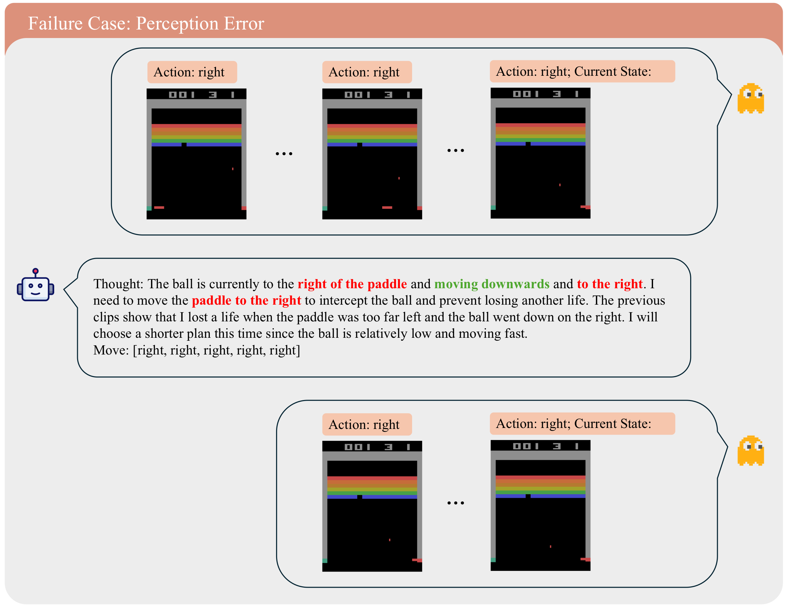

Spatiotemporal reasoning
Track object trajectories, speed, and direction from short high-FPS frame sequences.
NeurIPS 2026 · Evaluations and Datasets
A benchmark for testing whether multimodal LLMs can ground actions in fast Atari gameplay.
Leaderboard
Benchmark loop

What AtariBench tests
Models observe frame sequences, receive game-specific prompts, emit joystick actions, and are scored from closed-loop trajectories across 20 Atari games.
Track object trajectories, speed, and direction from short high-FPS frame sequences.
Convert the current visual state into the next joystick action under tight feedback loops.
Update actions from newly appended frames instead of relying on stale text history.
Check our paper additional diagnostic examples and failure-mode breakdowns.

In Breakout, the model identifies the ball and paddle but infers a direction that contradicts the ground-truth trajectory.
Gameplay
Atari 2600 games are the property of their respective copyright holders. Gameplay clips are shown for research illustration only.
Citation
@inproceedings{huo2026ataribench,
title = {Evaluating Spatiotemporal Reasoning of Vision-Language Models in Atari Gameplay},
author = {Huo, Mingjia and Fu, Yao and Chang, Bo and Wang, Yaqing and Zhu, Dawei and Zhang, Dylan and Yi, Xinyang and Hong, Lichan and Chi, Ed H. and Zhang, Hao and Tang, Jiaxi},
booktitle = {The Fortieth Annual Conference on Neural Information Processing Systems Evaluations and Datasets Track},
year = {2026}
}